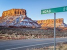
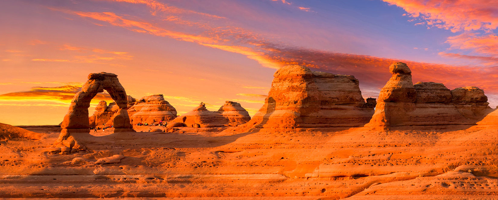

Moab, Utah is a beautiful desert town known for its red rock scenery, outdoor recreation, and nearby national parks. It is a popular destination for people who enjoy hiking, biking, camping, and exploring the outdoors.
This website provides some basic information about Moab and some of the activities and places that make the area special.

Arches National Park is one of the most famous attractions near Moab. The park contains thousands of natural sandstone arches and other unique desert formations.
Visit the Utah State University website to learn more about USU.
© 2026 Moab, Utah Website